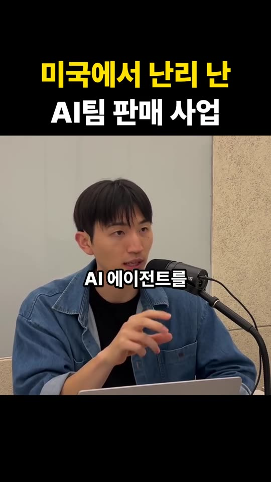

미국에서 난리 난 AI팀 판매 사업
grant._.ai · 2026-10-25 · 사업·마케팅
① 로우 데이터
.md 받기 .txt 받기출처 정보 · meta.json (1063B)
{
"id": "De6O0GKgGFg",
"platform": "instagram",
"url": "https://www.instagram.com/reel/De6O0GKgGFg/",
"type": "reel",
"media_count": 1,
"title": "미국에서 난리 난 AI팀 판매 사업",
"channel": "grant._.ai",
"account": "grant._.ai",
"account_name": "Grant | AI 자동화, 마케팅",
"account_id": "61203115228",
"upload_date": "2026-10-25",
"posted_at": "2026-10-25T17:02:54+09:00",
"duration_sec": 35.6,
"likes": 157,
"comments": 156,
"fetched_at": "2026-10-28T09:10:00+09:00",
"fetch_path": "yt-dlp anonymous -J --ignore-no-formats-error (caption+meta, no cookies/login); 영상 임시 다운로드(720p)→ffmpeg 0.5초 간격 자막 영역 프레임→육안 판독(burn-in 자막); 영상 삭제",
"whisper": "미실행: 가용 RAM 약 2GB(<6GB 조건). 화면 자막이 음성 전체를 덮는 것으로 보여 판독본 사용",
"note": "자동/수동 자막 트랙 없음. transcript.txt는 화면 자막 판독본. 캡션 하단은 작성자 자사 'AI 부트캠프' 홍보(댓글 키워드 DM 퍼널)."
}
화면 자막 판독본 · transcript.txt (1160B)
# 화면 자막(burn-in) 판독본 — 0.5초 간격 프레임 육안 판독. 자동/수동 자막 트랙 없음, Whisper 미실행(가용 RAM 약 2GB). # 화면 상단 고정 제목: "미국에서 난리 난 / AI팀 판매 사업" 00:00 미국에서 00:01 엄청 핫한 비즈니스 00:02 AI 에이전트를 00:04 AI 팀을 세팅을 해서 00:06 판다 00:06 저는 그렇게 생각해요 00:08 99%의 사람이 00:09 AI를 써도 00:10 뭘 할지 모른다 00:11 대부분은 뭐 할지 몰라 00:12 AI가 있는데 00:13 그냥 이상한 앱 같은 것도 00:14 많이 만들고 00:15 뭘 해야 될지 모르니까 00:16 그래서 저희가 00:17 에이전트 설계할 때도 00:19 그 에이전트 안에 00:20 어떤 문서를 넣을지 00:21 뭘 시킬지를 정의하는 게 00:22 되게 중요하잖아요 00:24 근데 대부분은 00:24 모르기 때문에 00:25 내가 그 업종에서 00:26 노하우가 있다 00:27 그거 AI팀으로 세팅해서 00:29 그걸 같이 판다 00:30 이런 비즈니스 00:31 저는 한국에서는 00:31 이제 막 태동기라고 생각해요 00:33 이제 초창기 00:34 이제 시작이다 00:35 그 시장이
자막 정리본 · transcript_clean.txt (865B)
[화면 제목] 미국에서 난리 난 AI팀 판매 사업 미국에서 엄청 핫한 비즈니스가 있어요. AI 에이전트를, AI 팀을 세팅해서 파는 거예요. 저는 그렇게 생각해요. 99%의 사람이 AI를 써도 뭘 할지 몰라요. 대부분은 뭘 할지 모릅니다. AI가 있는데 그냥 이상한 앱 같은 것도 많이 만들고, 뭘 해야 될지 모르니까요. 그래서 저희가 에이전트를 설계할 때도, 그 에이전트 안에 어떤 문서를 넣을지, 뭘 시킬지를 정의하는 게 되게 중요하잖아요. 그런데 대부분은 그걸 모르기 때문에, 내가 그 업종에서 노하우가 있다면 그걸 AI 팀으로 세팅해서 같이 파는 거죠. 이런 비즈니스요. 저는 한국에서는 이제 막 태동기라고 생각해요. 이제 초창기, 그 시장이 이제 시작이에요.
캡션 원문 · caption.txt (1375B)
요즘 미국에서 난리 난 사업, 아세요? AI팀을 세팅해서 파는 비즈니스예요. 저는 99%의 사람이 AI를 써도 뭘 할지 모른다고 생각해요. 그래서 그냥 이상한 앱 같은 걸 많이 만들죠. 에이전트를 설계할 땐 그 안에 어떤 문서를 넣고 뭘 시킬지 정의하는 게 정말 중요해요. 그런데 대부분은 그걸 몰라요. 그래서 한 업종에 노하우가 있다면 그걸 AI팀으로 세팅해서 함께 파는 거예요. 한국에선 이제 막 태동기라고 생각해요. 이 시장, 이제 시작입니다. 지금은 AI로 앞서나가는 시대입니다! 실제로 검증된 AI팀 세팅을 도와드립니다. 👉 댓글에 '모범'이라고 남겨주세요. 어려우시다면 모범 AI 부트캠프에 참여해 보세요. [모범 AI 성과] · 월매출 17억 친환경 제조업체 대표님 — 생산성 7.7배 증가 · 부동산 서비스업(임차인 케어) 대표님 — 월 2,500만 원 절감 · 기업가치 100억 커머스 회사 대표님 — 템플릿 복제로 여러 브랜드 동시 운영 · 미술학원 대표님 — 월 2,000만 원 인건비 절감 이 밖에도 월평균 매출 1억 3천을 내는 대표님들이 모두 이런 AI팀을 세팅하고 있습니다. #AI팀 #AI에이전트 #AI사업 #노하우판매 #미국트렌드 #대표 #사업 #모범AI

② 분석·정리
Research Level 1
[핵심 내용]
미국에서 'AI팀(에이전트 묶음)을 세팅해서 파는 사업'이 뜨고 있다는 36초 의견 릴스다. 화자는 99%의 사람은 AI가 있어도 뭘 시킬지 몰라 엉뚱한 앱만 만든다고 본다. 에이전트 설계의 핵심은 어떤 문서를 넣고 무엇을 시킬지 정의하는 것이고, 그래서 특정 업종 노하우가 있는 사람이 그것을 AI팀으로 구성해 함께 파는 것이 사업 기회라고 말한다. 한국은 이제 막 태동기라는 주장으로 끝난다.
[주요 주장]
[확인할 가치가 있는 부분]
| 주장 | 확인 결과 | 출처 |
| 미국에서 AI팀 판매 사업이 난리 | **부분 확인**. 'AI 자동화 에이전시'(업종 특화 에이전트·자동화 구축 + 월 관리비) 모델은 2026년에도 많이 언급되고, 업종 하나에 집중하는 쪽이 유리하다는 분석이 있음. 다만 출처가 대부분 업계·판매사 블로그라 '난리'의 규모는 확인 불가 | ciela.ai 2026 동향, the-aischool 가이드 |
| 99%가 AI로 뭘 할지 모른다 | **미확인**(근거 없는 수사). 참고로 중소기업 AI 도입률은 2026년 약 38%라는 업계 추정이 있음 | ciela.ai(Demandsage 인용) |
| 한국은 태동기 | **미확인**(화자 의견) | — |
| 캡션 성과: 생산성 7.7배, 월 2,500만 원 절감, 월 2,000만 원 인건비 절감 등 | **미확인**. 작성자 쪽 홍보용 자체 주장으로 검증 자료 없음 | 캡션 |
[현재 프로젝트와 연결 가능성]
[추가 연구 추천 여부]
자막 판독·교정 메모
③ 연결
원본 링크관련 자료: Deqy-Mexani · De6O0GKgGFg
GitHub 폴더